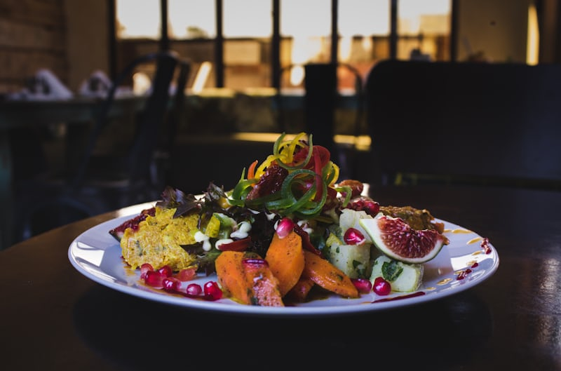

Mediterranean Diet: A Delicious Path to Health

The Mediterranean diet is not just a way of eating — it’s a lifestyle inspired by the traditional cuisines of countries bordering the Mediterranean Sea, such as Greece, Italy, Spain, and southern France. Known for its health benefits and rich flavors, this diet focuses on fresh, wholesome ingredients and simple cooking methods that bring out the natural taste of food. At the core of the Mediterranean diet are fruits, vegetables, whole grains, legumes, nuts, seeds, and healthy fats — particularly extra virgin olive oil. Olive oil serves as the primary source of fat, providing heart-healthy monounsaturated fats and antioxidants. Fresh herbs and spices are used generously to flavor dishes without relying heavily on salt. Seafood and fish are key protein sources in this diet, eaten regularly due to their high content of omega-3 fatty acids, which are beneficial for heart health. Poultry, eggs, and dairy products such as cheese and yogurt are included in moderation, while red meat is consumed sparingly. Beans, lentils, and chickpeas provide additional plant-based protein, fiber, and essential nutrients. One of the remarkable aspects of the Mediterranean diet is its balance. Meals are colorful, nutrient-rich, and full of variety, making them both satisfying and sustainable. Fresh seasonal produce plays a vital role, and meals are often accompanied by moderate portions of wine, particularly red wine, which contains antioxidants beneficial to heart health — always enjoyed responsibly. Beyond its health benefits, the Mediterranean diet is celebrated for its social and cultural aspects. It encourages shared meals with family and friends, a relaxed approach to eating, and an appreciation of food as part of a lifestyle rather than a restrictive regimen. This makes it easier for people to maintain in the long term. Health research has consistently shown that the Mediterranean diet supports heart health, reduces the risk of chronic diseases such as type 2 diabetes and certain cancers, and promotes longevity. It also supports healthy weight management and improves mental well-being due to its nutrient-dense and anti-inflammatory properties. Adopting the Mediterranean diet is not about strict rules — it’s about making choices that prioritize fresh, wholesome foods while enjoying eating as a joyful and social experience. It’s a diet that nourishes both the body and soul, proving that healthy eating can be delicious, fulfilling, and sustainable.
15 Jan 2022 in Chef
I absolutely love the Mediterranean diet! It’s not just healthy but also incredibly delicious. The focus on fresh vegetables, fruits, whole grains, and olive oil makes every meal feel vibrant and nutritious. I’ve noticed more energy and better overall health since following it. Plus, I enjoy the cultural aspect of sharing meals with family and friends. It’s a lifestyle, not just a diet — and it truly makes eating joyful.